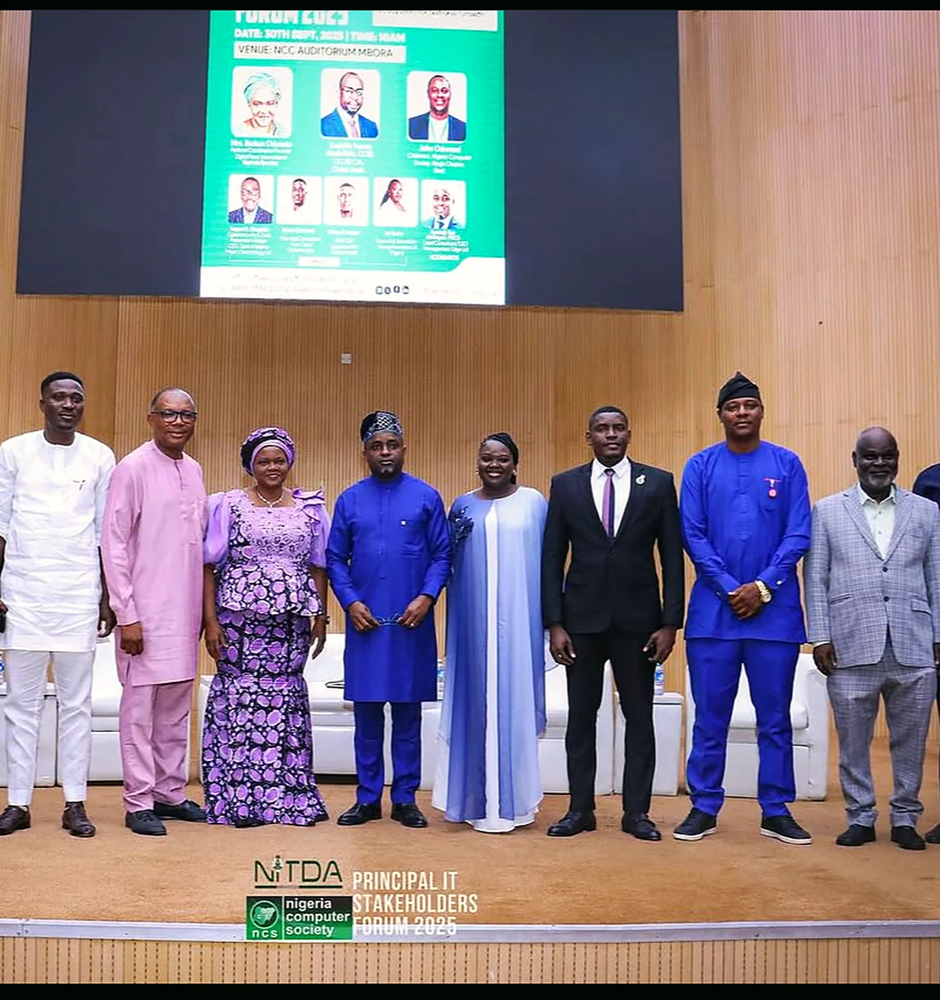
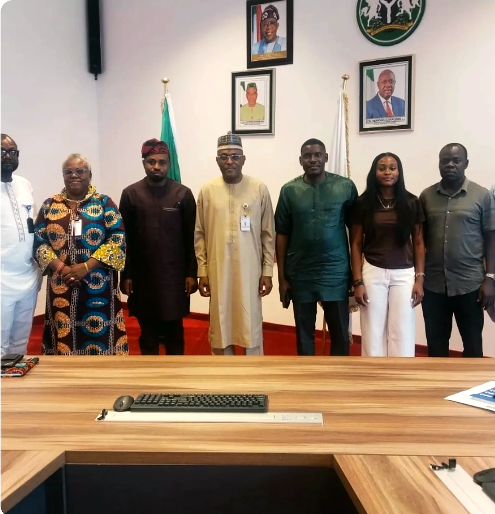

Focused conversations on policy shaping Nigeria’s digital future.
Second week
Member Masterclass
Practical learning led by experienced NCS professionals.

Third week
Industry Connect
Connecting real institutional needs with chapter expertise.
Fourth week
Techies’ Hangout
Networking, knowledge and opportunities, with follow-up.

From courtesy visits to lasting partnerships
The chapter engages public institutions on data protection, digital identity, security and capacity building, bringing professional expertise to national priorities.